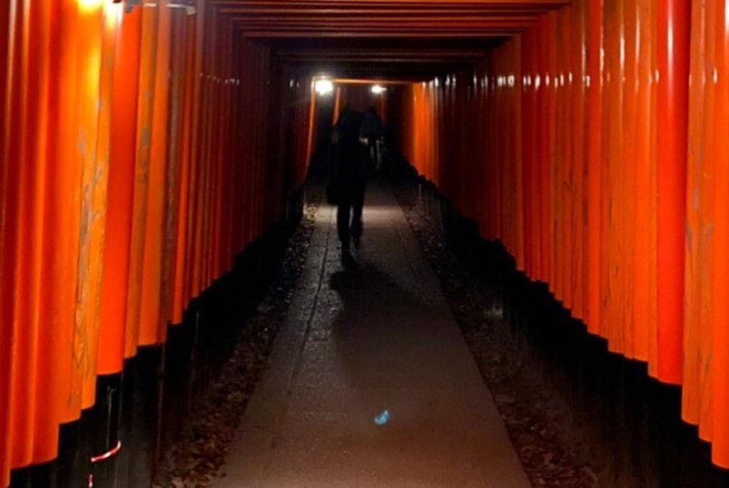
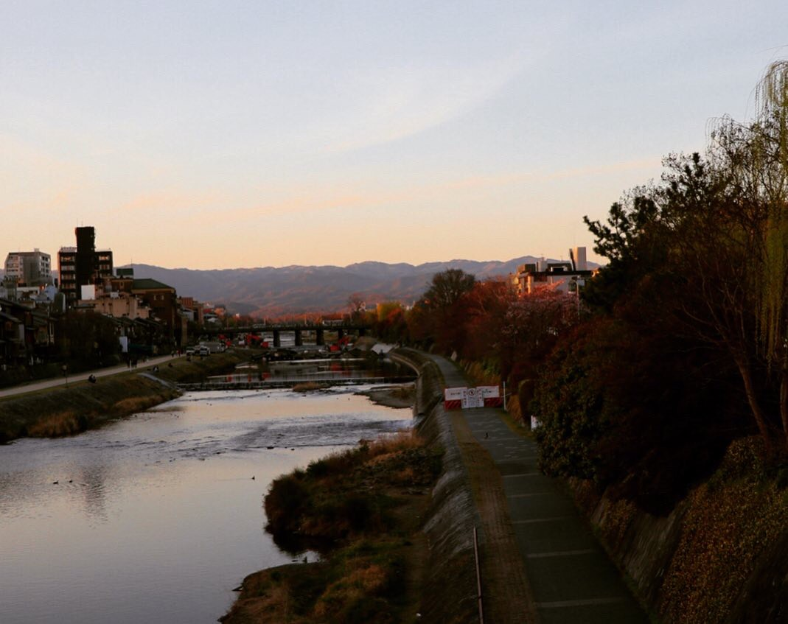
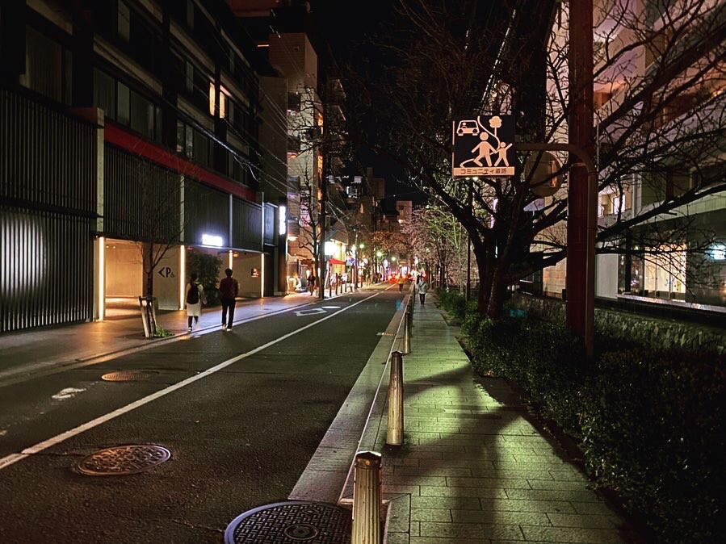
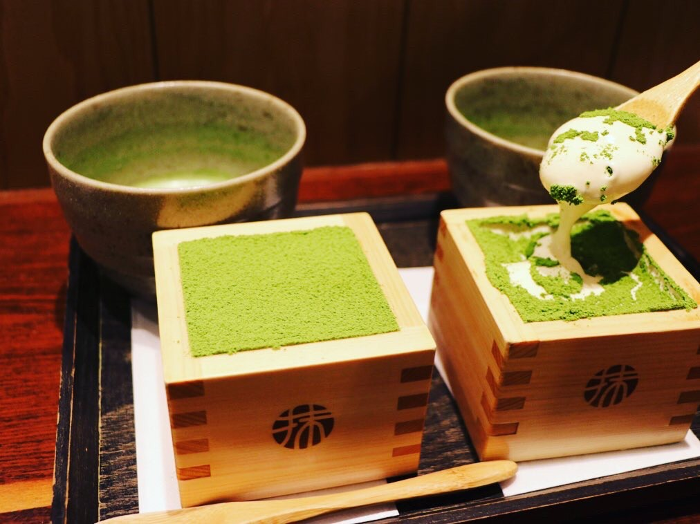
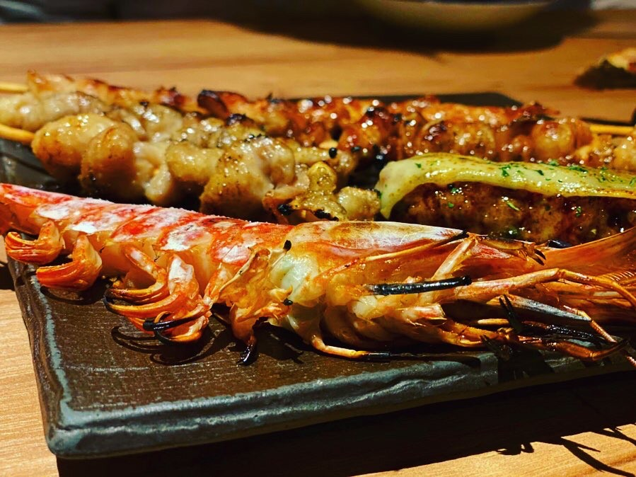
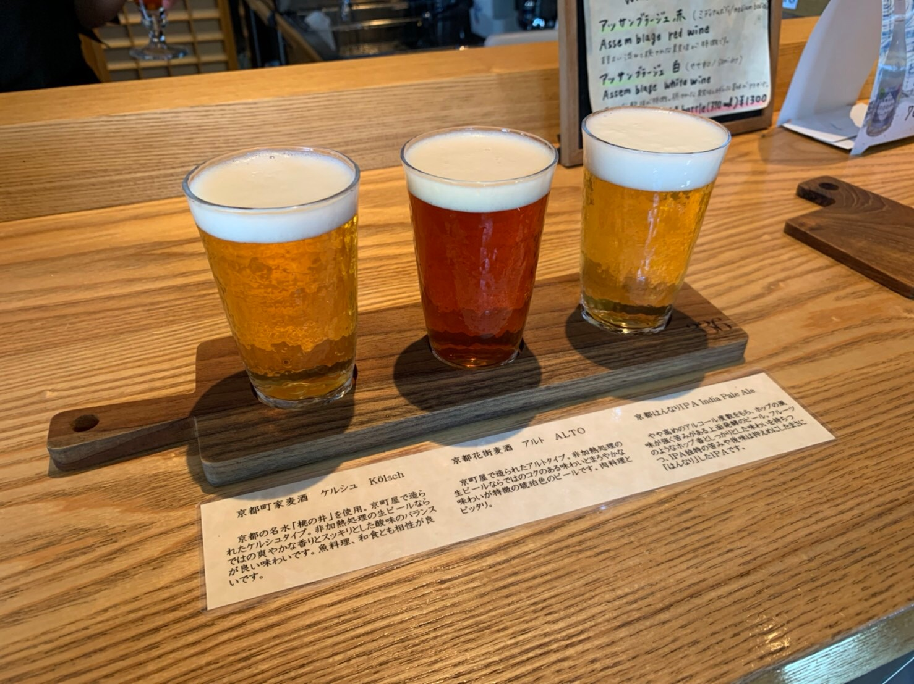
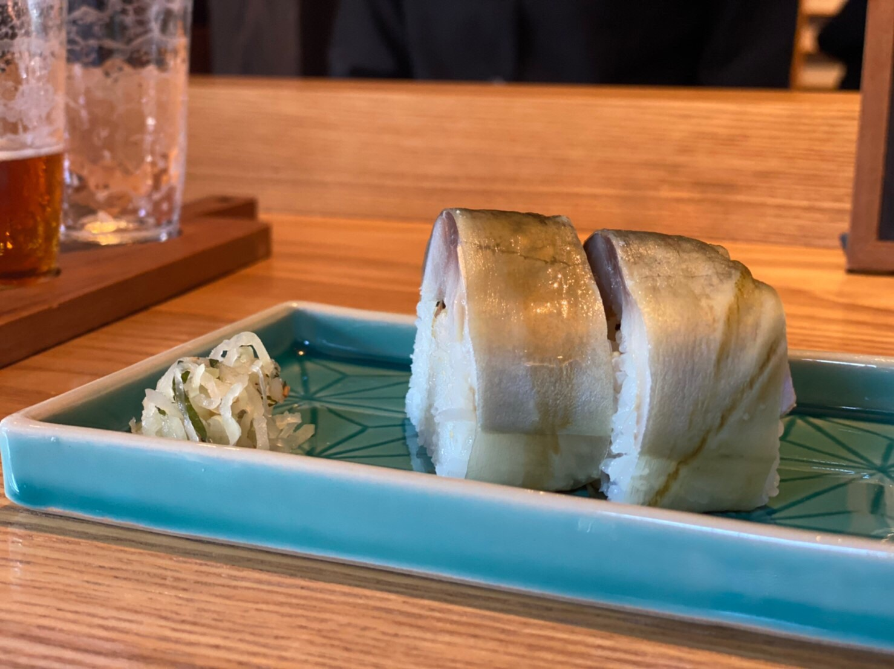
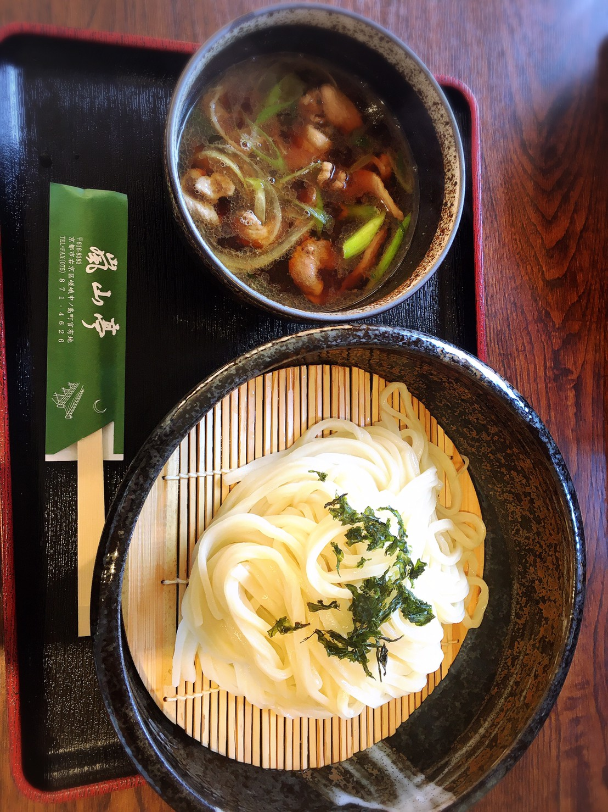

京都
794年に日本の首都になった平安京を基礎とする都市で，「千年の都」，または「古都」と呼ばれる．

京都市


市内に観光地が散在し，2000年以降は年間4〜5千万人台の観光客が訪れるという．
古くは京都が日本の政治・文化の中心となっていたことから，国宝の約20%，重要文化財の約14%が京都市内に存在する．
京都名物





関西圏に位置しながら，昔から日本の文化や宗教，政治の中心地であったことなどから，関西圏の他の都市には無い独特な食文化が育った．
割烹料理などをはじめ，抹茶，八つ橋，鴨そば，湯豆腐，鯖寿司，おばんざいなど様々な食べ物がある．